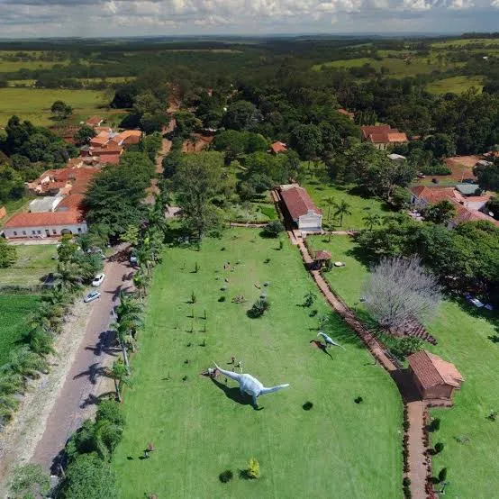

Peirópolis e os dinossauros do Brasil em Uberaba

A região de Uberaba é referência nacional quando o assunto são dinossauros do Brasil em Uberaba, reunindo registros de titanossauros, crocodilomorfos e outros vertebrados fósseis.

A região de Uberaba é referência nacional quando o assunto são dinossauros do Brasil em Uberaba, reunindo registros de titanossauros, crocodilomorfos e outros vertebrados fósseis.